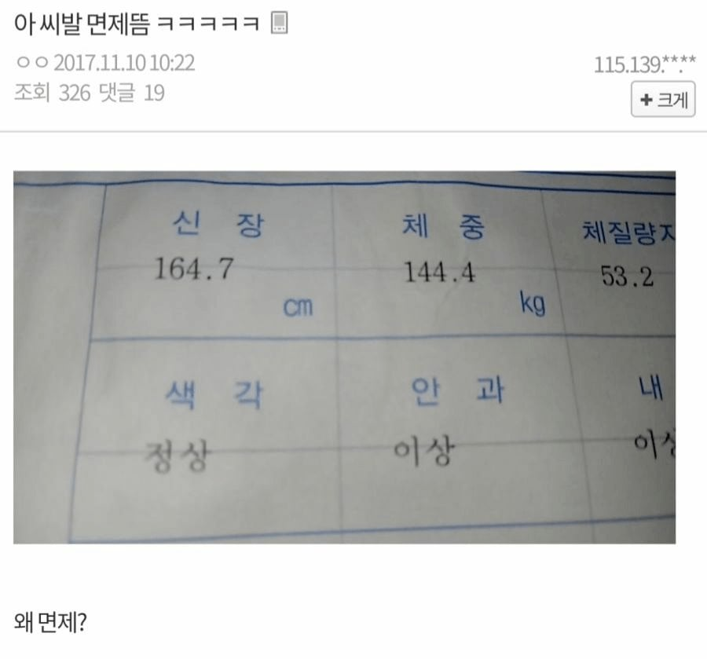
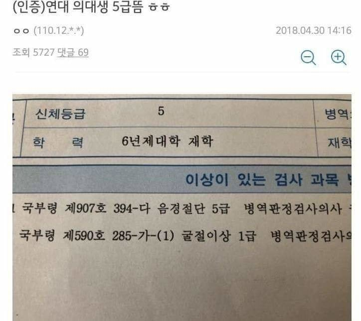
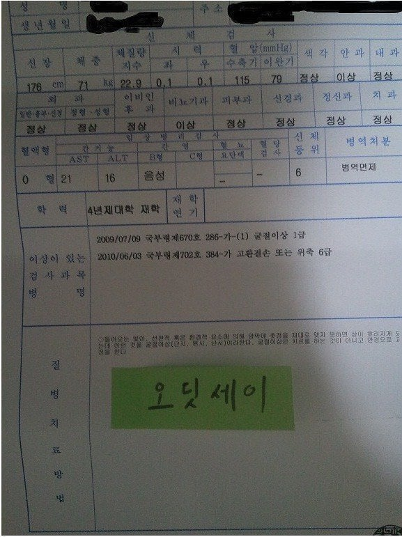
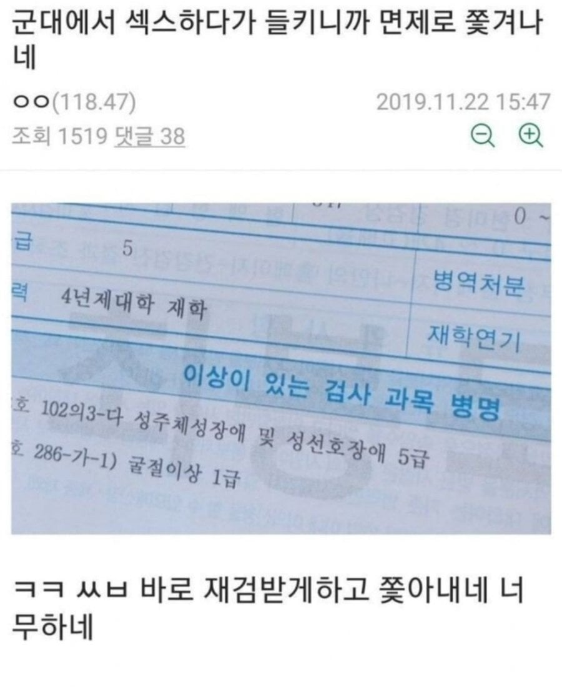

키빼몸 20
어케 살아잇농




키빼몸 20
어케 살아잇농
160에140은 사람보다 햄 쪽에 가까운거 같은데 시발
시각형인가
섹스도하고 2년도아끼고 이거 왜안함?
쟤들은 면제하는게 맞다
몸이 정사각형인가

164에 144는 살아있음?
혁준이도 못한걸 해내네
헉
찌리리공임?
동성애가 의학적 질병 아니라면서 성선호장애는 뭐여
음경 절단은 뭐임?
164에 144면 어떻게 살아있음?
몸이 원형에 가까울 것 같은데
살아남았다는 것은... 강하다는 것.
역전각 ㄲㅂ
거세정진 의대생은 첨보네 ㄷㄷㄷ
음경절단은 성전환수술 받은건가? 뭐여
와 키빼몸20은 진짜 재능인데